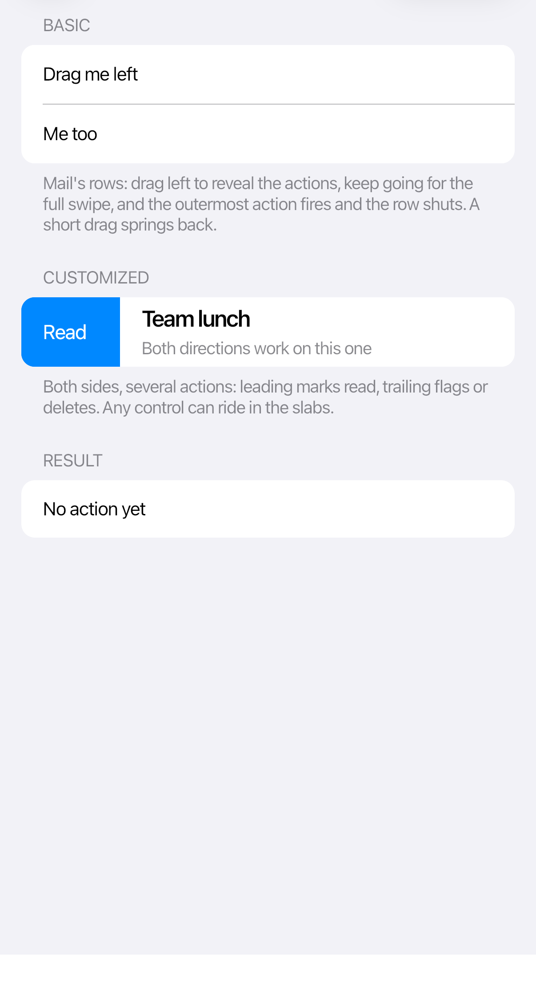

Swipe actions
CupertinoSwipeView reveals actions as the user drags a row. A full swipe invokes the outermost action, matching the iOS list-row model.

<cupertino:CupertinoSwipeView x:Name="MessageRow" Height="52">
<cupertino:CupertinoSwipeView.LeadingActions>
<Button Classes="swipe"
Content="Read"
Background="{DynamicResource CupertinoAccentBrush}" />
</cupertino:CupertinoSwipeView.LeadingActions>
<cupertino:CupertinoSwipeView.TrailingActions>
<StackPanel Orientation="Horizontal">
<Button Classes="swipe"
Content="Flag"
Background="{DynamicResource CupertinoSystemOrangeBrush}" />
<Button Classes="swipe swipe-destructive"
Content="Delete" />
</StackPanel>
</cupertino:CupertinoSwipeView.TrailingActions>
<cupertino:CupertinoListCell Title="Team lunch"
Subtitle="Tomorrow at noon" />
</cupertino:CupertinoSwipeView>
Only one row stays open at a time. You can also open or close its actions from code:
MessageRow.OpenLeadingActions();
MessageRow.OpenTrailingActions();
MessageRow.Close();
Use short action labels. Put the action you want a full swipe to trigger at the outer edge.